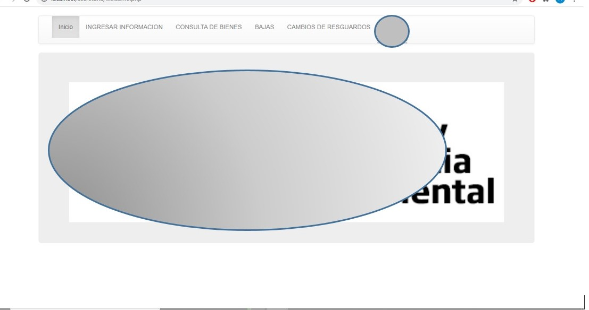

Proyecto Laravel
Proyecto final en el cual consiste en una aplicación similar a Instagram, en este proyecto se pueden observar las funciones
básicas del framework Laravel...
Leer más.. →

Control de Resguardos Contraloria
Se desarrolló de un sistema local inventarial que permita un control adecuado y confiable para el manejo de toda la información,
específicamente de los resguardos de los equipos de cómputo y de impresión que cada uno de los trabajadores tiene...
Leer más.. →

Control de Expedientes CRIE
Aplicación para el control de expedientes del CRIE (Centro de Recursos e Información para la Integración Educativa), para el desarrollo
de este proyecto se utilizaron tecnologías del lado de Backed PHP y MySQL como gestor de base de datos...
Leer más.. →
Sistema Solar Realidad Aumentada
Aplicación para dispositivos móviles, la cual hace uso de una tecnología muy popular hoy en dia que
es la realidad aumentada, en esta aplicación se puede observar el sistema solar realizar su movimientos de rotación tanto
en sí mismo así como alrededor del Sol...
Leer más.. →

Zombie Runner
App de categoría videojuego para dispositivos móviles con sistema operativo Android, fue desarrollado
con el programa Unity, aunque este entorno de desarrollo es más conocido para desarrollar aplicaciones en 3D eso no
impide que también se pueda para realizar lo mismo en 2D...
Leer más... →